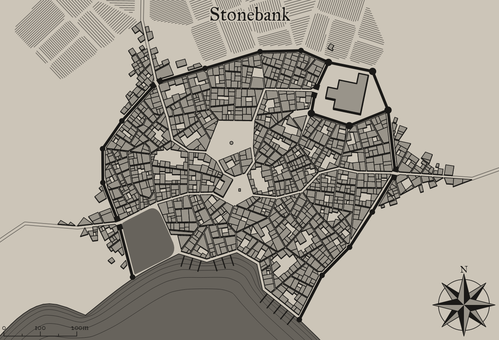

Stonebank
A mystical settlement in a fantastical world

Background Flavor
The village was originally a witch coven. Farmers from the area would come see them so often for help with diseases, curse, and potions that a hamlet formed in the area. The witches are long dead, but the town remains with citizens proud of their origins.
1
Settlement Features
Stonebank is a small city 5,001-10,000 located in the flat lands region of the areas greater grassland. The settlement seems to be new. Stonebank and the local surroundings are under the control of distant colonists.
Demographics
- Name: Stonebank
- Real population: 15560
- Population: Small City 5,001-10,000
- Number by race: Human 40%, Dwarf 10%, Elf 10%, Gnome 10%, Halfling 10%, Half-elf 15%, Half-orc 5%,
- Wealth: 3
- Age: 3
- Alignment: 3
- Government Type: Distant Colonists - The settlement’s ruler is a figure-head for a distant colonial power: a magistrate, governor, or minor landed noble. He or she may have limited autonomy in running the colony, but ultimately answers to the colony’s founding power. Colonies are typically seen as resources for their founding government, not having much political power or influence. The colony’s government is more concerned with making sure trade with and taxes paid to the homeland flow efficiently then the welfare of the colony’s inhabitants.
- Settlement Trait: Defensible
- Number Of Wards: 31
- Number of Districts: 5
Industry and Economy
- Primary Raw Materials: Farming
- Shops of Note: Lumber Mill, Fishmonger, Grain Mill, Stable, Toymaker, Glassblower, Carpentry: General, Artist: Painter, Investigator, Cobbler, Locksmith, Tailor.
- Number Of Inns/Taverns: 2
- Inns/Taverns of Note: The Mean Bleacher, Witty Miner Inn, The Mace, Laughing Vine and Dead Explorer, The Teamster Arms, The Red Rabbi Inn, The Ball.
Districts
Midtown Cledard
Underworld: Back alley, mugger’s row, gang turf, smuggler’s den, thieves district.
Citrine Woods
Military: Barracks, parade grounds, archery range, tower, armory, keep, castle, citadel.
Newup Row
Graveyard: Graveyard, cemetery, crypt, mausoleum, necropolis.
Upper East Winwoopt
Poor: Shack, orphanage, slums, workhouse, shanty town.
Lower South Glostes
Green: Common, green, herbalist, fishery, garden, lumberyard, granary, farm, parkland.
Taverns / Inns
The Mean Bleacher
Location
Lower South Glostes
Description
As you enter the tavern through the thick, wooden door, you're welcomed by silence and a horrific scent.
Innkeeper
Bob
Menu
- Stewed Sausage and Soft Cheese, Tankard of Stout (8 cp)
- Breaded Breast of Chicken, Whiskey and Mushroom Sauce (6 sp)
- Braised Oxtails with Mushrooms (6 sp)
- Stewed Eel and Turnip, Tankard of Cider (8 cp)
- Smoked Fresh Trout Fillets (4 sp)
Witty Miner Inn
Location
Midtown Cledard
Description
You did hear rumors about this tavern, supposedly it's infamous for something, but for the life of you you can't remember what for. Though juding by everything in this place, it must be something horrifying.
Innkeeper
Bob
Menu
- Soft cheese, Pomegranite, Corn pone (8 sp).
- Stewed Sausage and Soft Cheese, Tankard of Stout (8 cp)
- Stewed Lentils, Mug of Cider (3 cp)
- Roast Goose strewn with Caraway seeds (4 sp)
- Boiled Eggs and Buckwheat Bread, Tankard of Mead (11 cp)
The Mace
Location
Lower South Glostes
Description
The tavern itself is packed. Tourists seem to be the primary clientele here, which often leads to exciting evenings. Several long tables are occupied by, what looks like couples, lone travellers and anybody else who enjoys great company. The other, smaller tables are also occupied by people who are singing and dancing, occassionaly pulling an unsuspecting waitress amidst their dancing group. Even most of the stools at the bar are occupied, though nobody seems to mind more company.
Innkeeper
Bob
Menu
- Roasted and Smoked Pork Spareribs (6 sp)
- Stewed Mutton and Whey Cheese, Tankard of Perry (8 cp)
- Pottage, Mug of Perry (4 cp)
- Roast Stuffed Leg of Lamb with Mint Sauce (6 sp)
- Kito's Spiced Potatos (7 cp)
2
Laughing Vine and Dead Explorer
Location
Lower South Glostes
Description
You did hear rumors about this tavern, supposedly it's famous for something, but you can't remember what for. Though judging by the smells of grilled and cooked food coming from the kitchen, it must be the food. You manage to find a seat and prepare for what will undoubtedbly be a great evening.
Innkeeper
Bob
Menu
- Roasted Mushrooms, Mug of Cider (4 cp)
- Stewed Sausage and Soft Cheese, Tankard of Stout (8 cp)
- Roasted Mutton and Dried Turnip, Tankard of Mead (10 cp)
- Chicken Liver Pate and Bread (3 sp)
- Roast Stuffed Leg of Lamb with Mint Sauce (6 sp)
The Teamster Arms
Location
Citrine Woods
Description
You did hear rumors about this tavern, supposedly it's infamous for something, but for the life of you you can't remember what for. Though juding by everything in this place, it must be something horrifying.
Innkeeper
Bob
Menu
- Mixed grill, Collard greens, Chick peas, Rice, Plum pudding (2 gp).
- Mutton, Lettuce and Tomato (5 sp)
- Roast Goose strewn with Caraway seeds (4 sp)
- Breaded Breast of Chicken, Whiskey and Mushroom Sauce (6 sp)
- Stewed Sausage and Soft Cheese, Tankard of Stout (8 cp)
The Red Rabbi Inn
Location
Citrine Woods
Description
The tavern itself is almost completely abandoned. The few people inside could be locals, could be lost souls, but whoever they are, you'd like to stay as for away from them as possible.
Innkeeper
Bob
Menu
- Pottage, Mug of Perry (4 cp)
- Roasted Mushrooms, Mug of Cider (4 cp)
- Stewed Lentils, Mug of Cider (3 cp)
- Ham, Quail eggs, Duck eggs, Melon, Sea oats (2 gp).
- Stewed Lentils, Mug of Perry (4 cp)
The Ball
Location
Upper East Winwoopt
Description
It's difficult to see through the small, stained glass windows, but the enjoyment from within can be felt outside.
Innkeeper
Bob
Menu
- Stewed Lentils, Mug of Perry (4 cp)
- Pork chop, Chicken eggs, Black beans, Apple (2 sp).
- Boiled Eggs and Buckwheat Bread, Tankard of Mead (11 cp)
- Roasted Mutton and Dried Turnip, Tankard of Mead (10 cp)
- Cheese rolls with a filling of nuts, honey and vegetables (6 cp)
3